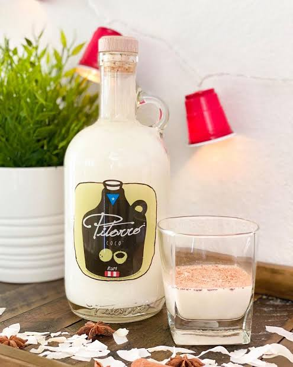

Pitorro de coco
Ingredientes
- 1 litro de ron blanco
- 2 tazas de leche de coco
- 1 taza de crema de coco
- 1 taza de leche condensada
- 1 rama de canela
- 5 clavos de olor
- 1 cáscara de limón verde
Preparación
- En una olla, calienta la leche de coco con la canela, los clavos y la cáscara de limón.
- Deja reposar y enfría para que se concentren los sabores.
- Mezcla con la crema de coco y la leche condensada.
- Agrega poco a poco el ron, probando la intensidad.
- Embóllalo en frascos de vidrio y refrigéralo mínimo 24 horas.
- Se sirve frío y es ideal en celebraciones navideñas.